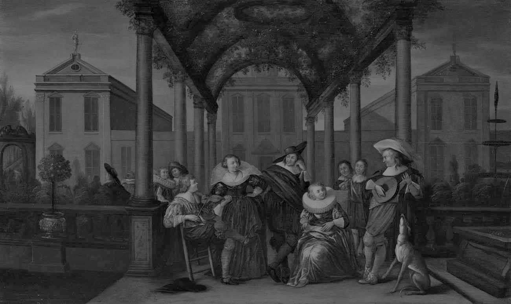

MONTH DAY, YEAR
Forty years
on the Workbench
This year February marked forty years since I left my viola studies at the Faculty of Music in Belgrade to devote myself entirely to making instruments. At the time, in my wildest dreams, I could not have imagined where that road would take me — the places, the people, the musicians, the makers, and above all the instruments themselves. I spent several years in Paris with Lengyel László — Laci bácsi, as I called him, "bácsi" being an affectionate Hungarian word for an older man, something like "uncle." He had two sons of his own, one a year older than me and one a year younger, and yet he took me in as if I were a third. Then I followed a girl to Taiwan, where she was from, and so began a journey of over twenty years across Southeast Asia — Taiwan, Singapore and Indonesia, all the while serving musicians across the wider region, as far as Australia. As a former player myself, I found my way back to musicians quickly. In Taiwan alone this grew to a large number of professional players from orchestras in Taipei and beyond, in Taichung and Kaohsiung — though I was far from the only maker working there at the time, I became known particularly for sound adjustments. Many of these musicians became friends, and before long I was adjusting the Casals cello and the Elman violin from the Chimei collection, preparing them for recordings, among others. It was always a privilege to work on instruments like these. They guided me the way a distant light guides someone through bad weather.
